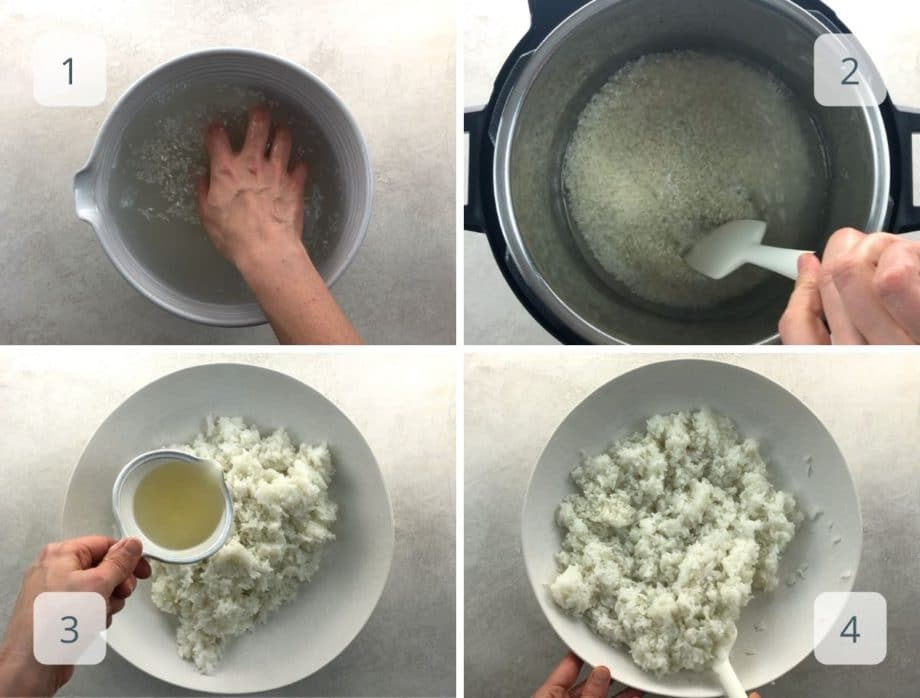
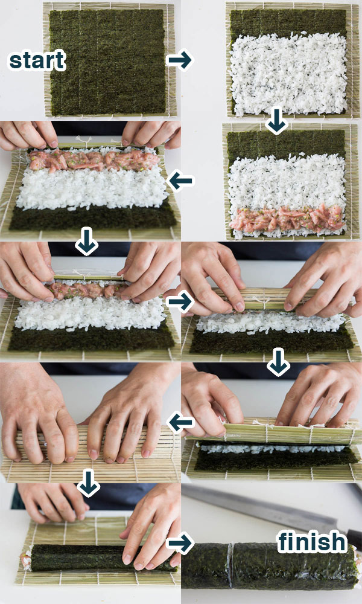
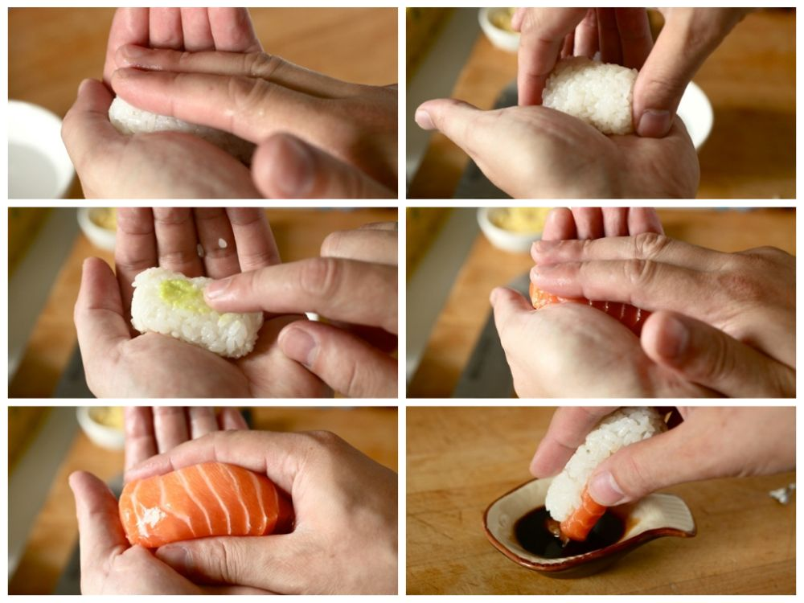

🍣 Sushi Master
Guía Secreta para mi Sobrina
🍚 Nivel 0: El Secreto del Arroz
▼
Sin buen arroz, no hay sushi. Este es el paso más importante.
1. Lavar: Lava el arroz 5 o 6 veces hasta que el agua salga transparente. ¡Quítale el almidón!
2. Cocinar: Misma cantidad de agua que de arroz. Fuego fuerte hasta hervir, luego mínimo y tapado por 15 min.
3. El Aderezo (Su): Mezcla vinagre de arroz, azúcar y sal. Caliéntalo sin hervir.
4. Enfriar: Pasa el arroz a una fuente amplia, echa el líquido y abanica mientras mezclas cortando (no aplastes).

🥒 Nivel 1: Hosomaki (Rollos finos)
▼
El clásico rollo pequeño con un solo ingrediente.
1. Nori: Corta la hoja de alga Nori por la mitad. Usa el lado rugoso hacia arriba.
2. Manos: Mójate las manos para que el arroz no se pegue.
3. Relleno: Pon poco arroz (deja un borde libre arriba) y una tira de pepino o salmón en el centro.
4. Enrollar: Usa la esterilla. Cierra cuadrado, no redondo. ¡Presiona firme pero suave!

🥑 Nivel 2: Uramaki (Arroz por fuera)
▼
Sube la dificultad. El famoso California Roll.
1. Invertir: Cubre toda el alga con arroz. Esparce sésamo. ¡Dale la vuelta! (Alga arriba, arroz abajo).
2. Relleno: Pon el relleno sobre el alga (palta, queso crema, salmón).
3. Plastificar: Envuelve tu esterilla en film plástico para que no se pegue el arroz.
4. Corte: Moja el cuchillo antes de CADA corte para que salga perfecto.

🍤 Nivel 3: Nigiri & Presentación
▼
El arte de la simplicidad. Pescado sobre arroz.
1. La nube: Toma una bolita de arroz pequeña (20g) y dale forma ovalada en tu mano sin apretar mucho. Debe tener aire dentro.
2. El corte: Corta el pescado en láminas rectangulares contra la fibra.
3. Wasabi: Un puntito minúsculo de wasabi entre el arroz y el pescado (opcional).
Tip Pro: Sirve siempre en números impares y acompaña con jengibre.
